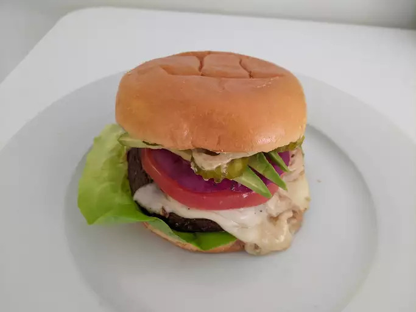

Portobello Mushroom Burgers

Portobello mushroom burgers are the steak of veggie burgers.
Serve these on buns with lettuce, tomato, and aioli sauce. Oh yeah!
Ingredients
- 4 portobello mushroom caps
- 1/4 cup balsamic vinegar
- 2 tablespoons olive oil
- 1 tablespoon minced garlic
- 1 teaspoon dried basil
- 1 teaspoon dried oregano
- Salt and pepper to taste
- 4 (1 ounce) slices provolone cheese
Steps
- Place mushroom caps, smooth side up, in a shallow dish.
-
Whisk together balsamic, oil, garlic, basil, and oregano in a small
bowl. Season with salt and pepper.
-
Pour vinaigrette over mushrooms. Let stand at room temperature for 15
minutes or so, turning twice.
- Preheat grill for medium-high heat.
-
Brush grill grates with oil. Place mushrooms on grill, reserving
marinade for basting. Grill until just tender, 5 to 8 minutes per side,
brushing with marinade frequently.
-
Top mushrooms with cheese and continue grilling until cheese is melted,
about 2 minutes.